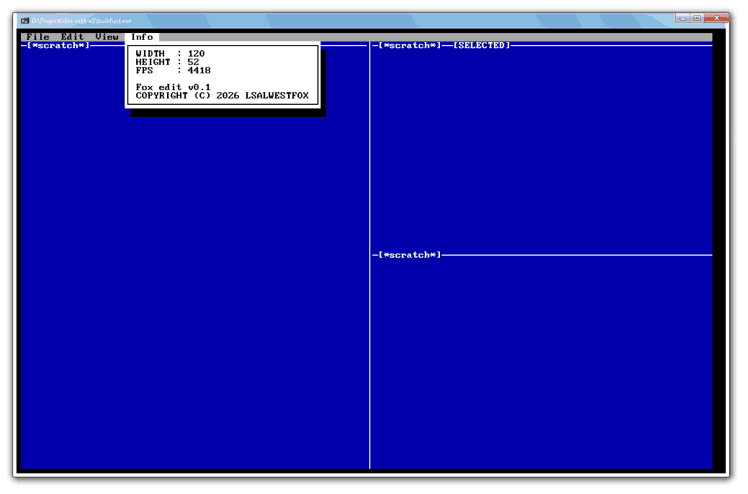
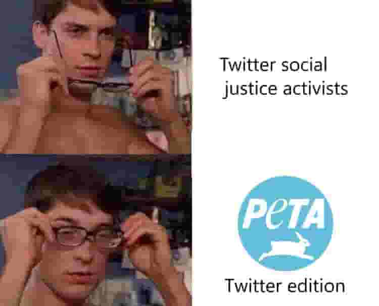
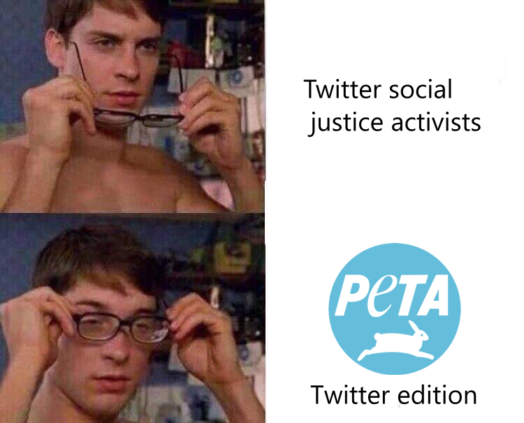
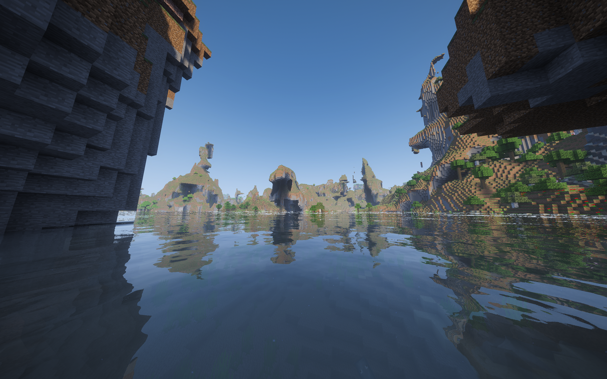

Images are heavily compressed, but by clicking on them you can view uncompressed version
Grep for ID:[ID] to get specific post.
I can sometimes edit old posts but that usually for fixing grammar errors.
Time and dates are in UTC :3
Actually I'll make file explorer after Jai's release, meanwhile I'll just do game on dx11, this 2 games at once but I just alternate between them each 1-2 days. Also I'll make design mobile-friendly, desktop of course takes priority because IMO mobile-first development is cancer to high-quality software or websites.
I'm making a MDI file explorer. I just my lazyness don't stick to me again and I actually finish it
I canceled project, I didn't cared that much
I slacked again but still writing editor, text displayed properly and I even added word wrapping support, it was not that difficult
I didn't liked other editors very much so I'm making my own text editor, here the editor running in debug build at 5,000-6,000fps, the same thing on speed build with size of 120x64 cells runs at around 10,000fps. Currently working on actual heart of the editor, i.e. editing i.e. buffers, thank god I don't need word wrapping

I did 0 progress in this time, my laziness baffles me
Turned out that writing tools were worthless, so I'll just do a game, simple one to start off
I did string reader and writer library, it took only few hours and testing it was not that bad actually, the only thing left is adding documentation, which is tedious.

I did sio.h (stdio extensions) library, directory part of it is retarted but API is simple and that was purpose, anyway, tomorrow I'm going to make string reader and string writer, just like sio 5 hours of work will be done to writing unit tests for different cases, the only part that demotivates me enough to drop project. It's not that they are difficult, just tedious and boring.
I should tell progress at least to myself, I'm currently working on my own set of "stb"-like libraries, primary for myself so I could do projects faster by not writing all the same stuff, currently I'm doing stdio+, which are stdio extensions, for example, reading entire file, utf-8 support, filesystem api and so on.
C/C++ build systems are retarted, just use C99, 2 files, one header library, one source which is code of the build script and just use compiler to boostrap it, then every time you change something in a build script it will rebuild itself
This is the only time I actually stopped in the game to took screenshot
This is first post ever

